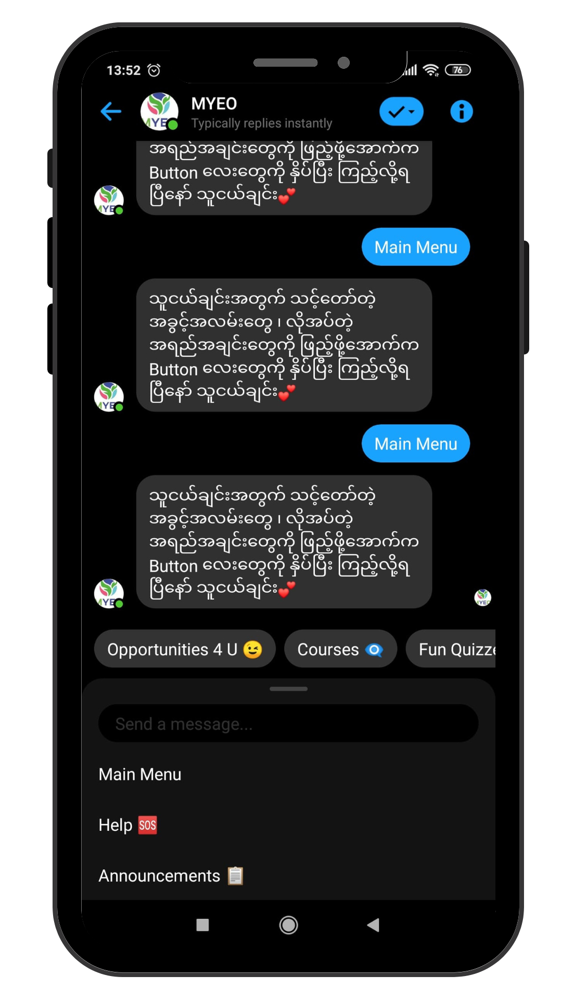

Introduction
This case-study was based on 14 months experience on designing and developing of Learning Management
System on subscription model.
This product was initaited in Myanmar Youth Empowerment Opportunities (MYEO) which is one of leading
organizations in Myanmar's Digital Transformation.
In 2018, 100 university people have been trained intensively with facilitators in order to be job
accelerated
people in a year. Those people are chosen with y factors and only a high spirited talent can be
selected.
By the start of 2020, more than 50 times can be trained with and without facilitators in
self-paced
learning
regardless of personal limitation meanwhile accessing many opportunities such as global
scholarships,
exchanges,
internships, volunteering positions and many others.
I was a part of an impact-driven process to redesign learning management system (LMS) with one
stop
service of
opportunities in order to be effective, accessible, and inclusive design.
[To comply with my non-disclosure agreement, I have omitted and obfuscated confidential information in this case study. All information in this case study is my own and does not necessarily reflect the views of Myanmar Youth Empowerment opportunities (MYEO).]
The Problem
We wanted to build an affordable and accessible learning system that can enhanced youths to be able
to
grasp the
maximum opportunities they can access with effective design, while keeping in mind of inclusivity.
We had
proven
this process by training over 100 people intensively both online and offline. The question was, how
can we
give
that same process to the entire youth population of Myanmar.
The Solution
We want to build an affordable accessible best-in-class LMS which offers bite-sized microlearning
and
opportunities with a 5% churn rate of educational subscription service that embraced a rapidly
evolving
21st
century skills with the mission to equip all of Myanmar's graduates with the skills to become
valuable
members
of the workforce and community.
We started it with the first stage of design thinking process “empathize” and approach the
problems with
human-centered and design thinking methods iteratively throughout the process. It includes UX
deliveries
such as
persona mapping, user journey, focus group usability testing, ethnographic interview, monthly
quantitative
and
qualitative analysis on users’ demographic and behavioral data. I use other methods of ideation
tools
such
as
crazy 8s, dot voting and etc.
I was a UX Designer who is also the communication medium of development team, content teams and
marketing
team. I collaborated with two developers, a graphic designer, a strategic manager, content team and
marketing
team.
My description in the role were:
- Develop human-centered and data-driven product and conversation design in chatbot
- Improve users’ experience with miscellaneous research methodologies
- Take responsibility of design trade-off backed by qualitative and quantitative data
- Create design concepts and drawings to determine the best product
- Present product ideas to relevant team members for brainstorming
- Suggest improvements to design and performance to product developers
- Lead the conversation strategy, user experience and build alignment with a variety of stakeholders across the organization
- Identify critical content issues and work with cross-functional partners to proactively drive improvements forward
- Lead in user testing and synthesize findings into delightful user experiences
- Create conversational workflows and strategies based on user feedback, research, and data
- Work closely with the content and design teams to build exceptional user experiences
- Design sketches, flow diagrams, wireframing, and prototypes
Since the product was my first product designing, it was quite exciting and facedfacing lots of
challenges
over
time. Within 1 year and 2 months of working for the product, the challenges are changing over time
and
product
insights are also varied from time to time.
Our ultimate goals for product were to:
- Design market-fit product with well-understanding of auidence
- Increase over 30% of conversion
- Reduce 5% of churn
With pre-existing assumption that youths in Myanmar need to learn digital literacy and soft skills
of 21st
century
skills in order to achieve whatever the opportunity is. In order to approve or disapprove that
hypothesis
and
understand users’ needs, wants, feeling, pain-points and motivation, I started with persona mapping
with 8
youths
among targeted groups of youths.
I chose the participants very carefully for the sake of the fact that overlapping the same types of
persona
and
being left out of the persona. So, I basically chose the current users’ status on demographic,
attending
some
specific courses with certain purposes, choosing money over education, doing nothing except catching
up on
some
lectures in the university.
My task is to listen carefully to what users said by recognizing my bias. I use paseo protocol in
order to
recognize my bias.
Through persona mapping and industry-research of similar information sharing pages, five main-insights caught my thoughts
- Demanding Volunteering Positions and Internship Positions
- Scholarship Preparation Courses
- Digital Skills
- Communication Skills
- Coaching
In terms of statistical research, 4.3 millions Myanmar youths aged between 18 to 24 years use Messenger in 2019. So, the strategic manager decided to make learning management system with messenger-based automated chatbot.
So, I was needed to do research about writing conversion for instant message-based platform and teaching through text-based platform. I did research for a week on similar message-based applications such as wysa, dualingo, woebot and etc.
- What the product is and its price?
- Course Syllabus and how a user will be taught?
- The benefits of the course?
After spending two weeks on my research and two weeks of implementation by two developers, we could
finish a
minimum viable product with messenger chatbot which includes:
- Opportunities session where categorize all opportunities and one week latest opportunities
- Scholarship Preparation Lectures
- Free Courses where includes Digital Skills and Soft Skills
- Skills Tests which a user can reflect what he/she/they learnt by taking some questionaries that can earn 10 points for every right answer.
- Fun Quizzes which a user can take engaging general knowledge questionaries
- Market Place where exclusive opportunities, training and coaching can be either redeemed with points or bought with affordable price.
Within one week after finishing, I could lead rapid usability test with 4 focus groups which include
5
people in
each together with my development team.
The goals were:
- To understand the pain points of conversation
- To approve/disapprove the assumption that messenger-based chatbot learning is more user friendly than application usage in Myanmar
- To ensure the tentative product’s features, functions are in line with what our users’ wants
-
Findings Addressing The Findings The importance of emojis: Emojis are important to impress feeling in text. Users were encouraging to add some engaging emojis where necessary. Adding emojis where necessary throughout the whole chatbot conversation User-friendly but tricky: Some buttons are not appearing where they are supposed to due to device limitation and facebook’s problem. Sometimes, buttons are delaying to appear. Making sure to add initiative conversation to solve button-delayed and user’s culture of “want-to-type” than “choosing button” Features were ok but interface were too bulky: If a user types accidentally, he/she/they will be out of chatbot flow. I orginized the interface with the consideration of user mental model which means scholarship preparation, digital skills, soft skills are under same category and so do skill test and fun quiz. -
During the minimum viable product lauch, it was important how to make the process to be smooth when users are making decision to buy a product.We unpacked the concept of “increasing 30% of conversion” and set the metrics before making purchase of the product throughout consideration and awareness.The product team came up with this framework to increase conversion.
Goal Signal Metrics To increase conversion in onboarding Reach payment options as quick as possible, being in a loop of conversation Conversation Conversion Rate, Completion Rate To know best payment option for users Most frequent/least chosen option for payment method Payment Chosen Chart To create a-ha moment Satisfaction, setting decision to buy Buying Product, User Rating -
The process of chatbot onboarding, collecting personal information exacerbates to make a single payment.“... how might we support users to make payment with minimum effort while enhancing the desire to buy the product and sustain the engagement understanding the product properly? ... ”

Get Your 14 days Free-trial
You can get full features access within 14 days once you come to us in order to explore about
product features and decide whether this meets with your needs and wants meanwhile you can
make a payment with a minimum effort via a click.
Save Your Privacy
You will only be needed to answer 3 questions in order to improve your experience before,
during and beyond using the product. It made the decrease of 75% of saving your privacy.
[ I did not mention what information is collected due to company’s confidentiality]
Receive your personalized a-ha moment
You can fulfill your personalized needs once you fill up what you want.
Get the popular and latest opportunities
We re-categorized and updated the opportunities section in order to make sure users are having
popular and latest information about volunteering positions and internship opportunities which
is backed by the insights from quantitative data.
Accelerate yourself with Intensive Learning
You can accelerate your skills from basic to intermediate level with defined learning outcomes
based on pathways for your workplace preparation, especially for your digital and soft skills.
It’s ok to miss something. You get your back
You will be reminded with weekly update journal which include weekly opportunities, courses,
fun activities update. Those activities can be accessed anywhere and anywhen you are
comfortable with.
If you don’t know how to use the product, there will be weekly orientation call. It is sure
that you will get pre-recorded video and slides even if you missed the call. You don’t need to
worry to miss any updated features as we will introduce you the features you haven’t done
whenever the time suits with you.
[ Discovery & Iterative Process ]
There are three primary questions out of many minor considerations in order to form the final
version of the product. Those primary were:
- What and why do they love and hate about product?
- What can enhance conversion to 30%?
- What can decrease churn to 5%?
It was important to understand what they love to use and why they influence users’ behaviour. I
worked with a development team to map out the users who were considered to be our lovers to the
product. Then, we conducted a qualitative interview with 19 lovers.
3 Main Findings were:
- Opportunities make conversion: 53% of interviewees buy the product by only knowing about one categories called opportunities among five categories [opportunities, courses, skills tests, fun quizzes, market place]. After using a couple of weeks, they are getting to know other values about the product beyond opportunities such as free courses, skill tests and fun quizzes.
- All features has value: Each and every features has the value for users. Opportunities and Courses are equally the most popular value to the users out of all things. Users’ success has been happened when they got reflection by themselves after learning while accessing relevant and most updated opportunities on a click.
- he interface exacerbate to understand product value: The interface were a bit confusing in order to know the difference between skills tests and fun quizzes. There is no such valuable proposition in market place interface too. Users are being lost of product value among multiple choices.
Where I was stuck by
“Even though courses are as same value as opportunities, why can’t it make conversion?”
Walking backward from perfect
- How might we create the product which is full of users' preferences?
- How might we increase conversion by selling "courses"?
- How might we help users to understand the value of the product?
- How might we keep engaging to users?
By unpacking the insights, 4 things to enhance were:
- Ensure opportunities are at one stop service: They prefer being served varieties of opportunities in one click. Volunteer positions and internships are the most demanded backed by quantitative data too. 21% of interviewees specifically mentioned the word "One Stop Service" in opportunities.
- Enhance engagement Activities: Users’ engagement and satisfaction feeling has been raised due to the facts of having fun and reflection as well as being reminded through knowledgeable context with such as general knowledge fun quizzes, weekly updated journal and learning tips and tricks with reminders.
- Unriddle the interface: The interface has been simplified from 5 categories to 3 categories where users can access one stop service opportunities, learn to achieve those opportunities and have fun and reflection with quizzes.
- Intensive Learning Pathways: We re-designed 2 months self-paced learning journey which is specifically focusing on necessary foundation of digital and soft skills to 4-6 months self-paced learning journey which can be considered intermediate level instead of providing random micro-courses.
1 insight to address and 2 hypothesises to testify were:
- Decrease Website Error: 40% of dissatisfaction comes from website errors. Users couldn't access some contents due to frequent technical problem.
- Do marketing for free courses and skill tests through success story: The conversion can be raised double if we can surely sell the values of free courses and quizzes in terms of the above insight. Our team tested the marketing strategy via marketizing to each feature and boosting those post with a certain equal amount of money. Then, measured the conversion of each post.
- Enhance user’s life time value (LTV) to 3 months through product value understanding: 30 % out of all interviewees paid in 3 months option among 1month, 3 months and 6 months. Nearly 40% of users are able to start buying 3 months option if we can actually sell the values to them.
After addressing the insights from 19 lovers interview, I made ethnographic interview with 10
people. I chose the people in a way that
- 3 people who extend the payment from old dis-ordered learning-design
- 3 people who extend the payment from new intensive learning-design
- 2 people who churned away
- 2 people who has the potential to be churned away
The reason was to craft the churn rate and increase the retention of the product.
4 Main Insights were
- Understanding chatbot and knowing features is one of the factors for retention. 83% of retention interviewees understand how to use chatbot.
- 83% of retention interviewees have an exposure with MYEO in some ways : virtual bootcamp, friend recommendation, physical event.
- Hit feature for 50% of retention people is the Opportunities. Hit feature for 33% of them are Opportunities & Courses.
- 30% of interviewees have got confidence to attend any other online course for their own skills development.
Where I was stuck by
“ I am wondering weakening the understanding of product feature means due to weak onboarding
conversation ”
Reframing the problem
“ How might we develop conversational onboarding about product’s features and how to use chatbot? ”
In terms of insights synthesising
- We could not expect people who come to us for opportunities to use the rest of the features such as courses and tests. So as long as one keeps using the “ Opportunities 4 U” tab and receiving opportunities, he will stay with us. In other words, as long as they know the value of specific features, they will stay with us. According to the dashboard lover system, 64% retention people use specific features rather than using all features. [I do not show the dashboard due to company’s confidentiality.]
- Enhancing MYEO Community so that we can have more users who have been recommended by peers.
- Educating about chatbot usage and features as far as we could such as conversation design & more accessible for an orientation call.
- From the interviewer's perspective, there are only three types of comers to MYEO.
- Opportunities Hunter ( Opportunities 4 U tab is enough )
- Personal Development Hunter in a way of soft skills & digital skills ( Courses Tab is enough)
- Opportunities & Skills Development Hunter ( Opportunities 4 U & Courses: need to force to use all features )
MYEO needs to craft each comers “who are they” after a specific time and engage them in a
personalized way such as sending personalized messages or phoning in order to retain their interest
in specific features according to their type.
Eg : For a personal development hunter, we can display the learning tracks and how he can upgrade himself after this first track.
Because of the fact that 50% of retention interviewees’s chatbot usage is low but usage on a specific feature is more than any other features.
Based on those synthesis of insights, the data scientist could run the logistic regression based on 50 data points in order to predict whether a user will buy the product or not while I am analysing the interview’s result in order to set the selling points to each categories.
We categorized users into three:
- People who will extend the payment
- People who are likely to extend
- People who will not extend
I led the sale team in order to make a call to people who are likely to extend together with sale pitch. 90% of logistic regression was true and we could decrease churn into 5.2%.
The redesigning and gratual problem solving has impacted on the product positively and could enhance the substantial revenue while accelerating learning management system with enhanced experience.
The number of trained youth has been enhanced 50 times.
User’s live time value (LTV) increased to 6 months
Daily Active Users increased by 12%
Churn Rate decreased by 5.2%
Conversation Rate increased by 40%
Retention Rate increased by 20%
- Sometimes, the needs of users can be varied in terms of times and circumstances. [Falling Example: Users’ needs and wants in covid. During the period of covid, digital skills is more important than ever as most companies are shifted to work-from-home.]
- Insights have been varied over times due to research and data.
- When we conduct interviews and ethnographic studies, we need to exclude bias by recognizing. Paseo protocol is one good way to pratise.
- Assumption does not work in decision making. Assumption must be validated with quantitative and qualitative data. [Falling Example: Reminder Frequency when I want to enhance user engagement on the product]
- Let go off the ideas when it is not valid. The ideas and insights have been changing over time.
- What I have learned from it is that it is not just enough to listen to what they said sometimes and also we need to also watch what they do.
- We need to know where and when to follow the cultural probe in how.